01 / АНИМАЦИОННОЕ КИНО
CYBER
SCUM
ПОСТАПОКАЛИПСИС, КОТОРОГО ВЫ ЖДАЛИ
Raven переносит сознание между телами, противостоит тирании корпораций и ищет способ вернуть миру человечность.

ПОСТАПОКАЛИПСИС, КОТОРОГО ВЫ ЖДАЛИ
Raven переносит сознание между телами, противостоит тирании корпораций и ищет способ вернуть миру человечность.